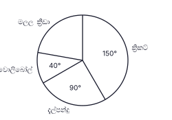
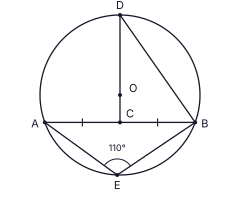
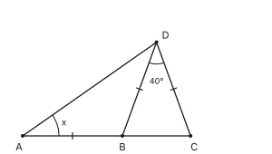
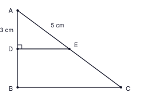
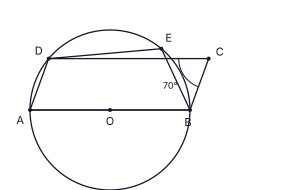
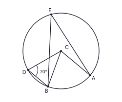
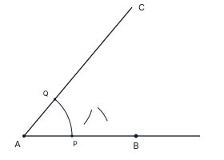

කසුන්ගේ ගොවිපළේ ඇති කුඹුරක වල් පැළෑටි, එකම වේගයෙන් වැඩ කරන කම්කරුවන් 12 දෙනෙකුට දින 15 කින් ඉවත් කළ හැකිය. එම කුඹුර දින 9 කින් පිරිසිදු කිරීමට තවත් කම්කරුවන් කී දෙනෙකු අවශ්ය ද?
රූපයේ AB ∥ CD වේ. BÂE හි විශාලත්වය සොයන්න.

සුළු කරන්න: 34x + 56x − 13x
පාදය ත්රිකෝණයක් වන සෘජු ප්රිස්මයක මුහුණතක් විය නොහැක්කේ පහත දැක්වෙන චතුරස්ර අතරින් කුමක් ද? එය ඉදිරියෙන් ✓ ලකුණ යොදන්න.
(i) සමචතුරස්රයක් (ii) සමචතුරස්රයක් නොවන රොම්බසයක් (iii) සෘජුකෝණාස්රයක්
පන්තියක සිසුන්ගේ ප්රියතම ක්රීඩාව දැක්වෙන වට සටහනකි. සෑම සිසුවෙකුම තෝරා ගත්තේ එක් ක්රීඩාවක් පමණි. වොලිබෝල් තෝරා ගත් සිසුන් ගණන 12 කි. ක්රිකට් තෝරා ගත් සිසුන් ගණන කීයද?

රූපයේ O කේන්ද්රය වූ වෘත්තයේ AB ජ්යාව C හිදී සමච්ඡේදනය වන අතර DOC සරල රේඛාවකි. AÊB = 110° නම්, CD̂B සොයන්න.

සාධක සොයන්න: 3x2 − 75
100.6990 = 5 බව දී ඇත. lg 50 හි අගය ලියන්න.
AB යනු තිරස් බිමක පිහිටි සිරස් විදුලි කණුවකි (BÂC = 90°). බිමේ C හි සිටින කසුන් B හි ඇති විදුලි බුබුළ දෙස ඉහළට බලයි; B හි සිටින සේවකයා කසුන් දෙස පහළට බලයි. රූපයේ C සිට B හි ආරෝහණ කෝණය a ලෙසත්, B සිට C හි අවරෝහණ කෝණය b ලෙසත් ලකුණු කර, a සහ b අතර සම්බන්ධය ලියන්න.

සිලින්ඩරාකාර ටින් එකක උස එහි පාද අරය r මෙන් 4 ගුණයකි. පාද අරය r සහ උස h වූ සිලින්ඩරයක වක්ර පෘෂ්ඨයේ වර්ගඵලය 2πrh වේ. ටින් එකේ වක්ර පෘෂ්ඨය වසා දැමීමට අවශ්ය කඩදාසි වර්ගඵලයේ සිට එහි වෘත්තාකාර පාදය වසා දැමීමට අවශ්ය කඩදාසි වර්ගඵලයට අනුපාතය සොයන්න.
මුහුණත් හතරේ පිළිවෙළින් 2, 4, 6 සහ 8 ලකුණු කර ඇති සමතුලිත චතුස්තල දාදු දෙකක් එක් වරක් උඩ දමනු ලැබේ. දාදු දෙක තිබෙන පතුලේ මුහුණත්වල අංකවල එකතුව 12 වීමේ සම්භාවිතාව සොයන්න.
රූපයේ ABC සරල රේඛාවකි. AB = BD = DC වේ. BD̂C = 40° නම්, x හි අගය සොයන්න.

සර්වත්ර කුලකය ξ = {1, 2, 3, ..., 10} වේ. A = {12 හි සාධක}, B = {ඉරට්ටේ සංඛ්යා} වේ. නිවැරදි ප්රකාශය ඉදිරියෙන් ✓ ලකුණ යොදන්න.
(i) A ∩ B = {2, 4} (ii) A ∪ B = {1, 2, 3, 4, 6, 8, 10} (iii) n(A′) = 4
සුළු කරන්න: 6x3y2 × 5xy310x2y2
ගුණෝත්තර ශ්රේඪියක දෙවන පදය සහ තෙවන පදය පිළිවෙළින් −12 සහ 6 වේ. එහි පස්වන පදය සොයන්න.
රූපයේ ABCD වෘත්ත චතුරස්රයකි. BD මගින් AD̂C සමච්ඡේදනය වේ. AB, E දක්වා දික් කර ඇත. BÂC = 29° නම්, CB̂E සොයන්න.

24p3q2, 36p2q3 සහ 60p2q යන පදවල මහා පොදු සාධකය සොයන්න.
වර්ගඵලය 154 cm2 වන ත්රිකෝණාකාර පාදයක් සහිත සෘජු ප්රිස්මයක් සහ සෘජු වෘත්තාකාර සිලින්ඩරයක් සමාන උසකින් හා සමාන පරිමාවකින් යුක්ත වේ. සිලින්ඩරයේ පාද අරය r සොයන්න. (සිලින්ඩරයක පරිමාව = πr2h)
ABC ත්රිකෝණයේ D සහ E යනු පිළිවෙළින් AB සහ AC හි මධ්ය ලක්ෂ්ය වේ. AD̂E = 90° වේ. AD = 3 cm සහ AE = 5 cm වේ. BCED ත්රපීසියමේ පරිමිතිය සොයන්න.

(2, 3) සහ (6, 5) ලක්ෂ්ය හරහා යන සරල රේඛාවේ සමීකරණය සොයන්න.
රූපයේ O කේන්ද්රය වූ වෘත්තයේ AOB සරල රේඛාවකි. ABCD සමාන්තරාස්රයකි. BĈD = 70° නම්, DÊB සොයන්න.

නදීෂා මුදලක් වාර්ෂික 5% වැල් පොලියට වසර 2 ක් ආයෝජනය කළාය. වසර 2 කට පසු ඇයට ලැබුණු මුළු මුදල රු. 22 050 කි. ඇය ආයෝජනය කළ මුදල සොයන්න.
රූපයේ C කේන්ද්රය වූ වෘත්තයේ AC ∥ BD වේ. BD̂C = 70° නම්, AÊB සොයන්න.

4x + 15 > 3 අසමානතාව විසඳා, එය තෘප්ත කරන x හි ඍණ නිබිල අගයන් ලියන්න.
AB සහ AC මාර්ග දෙක A හිදී හමුවේ. වෘත්තාකාර පොකුණක් AB මාර්ගය B හිදී ස්පර්ශ කරන අතර AC මාර්ගයද ස්පර්ශ කරයි. පොකුණේ කේන්ද්රය සෙවීමට අවශ්ය ඉදිකිරීමේ කොටසක් රූපයේ දක්වා ඇත. සරල දාරයක් සහ කවකටුවක් භාවිතයෙන් ඉදිකිරීම සම්පූර්ණ කර පොකුණේ කේන්ද්රය O ලෙස ලකුණු කරන්න.
